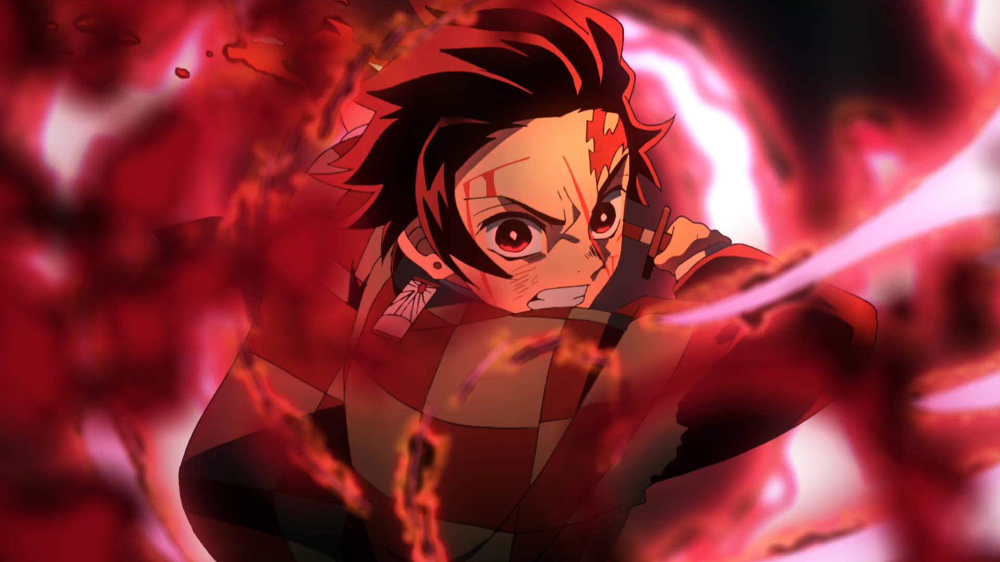
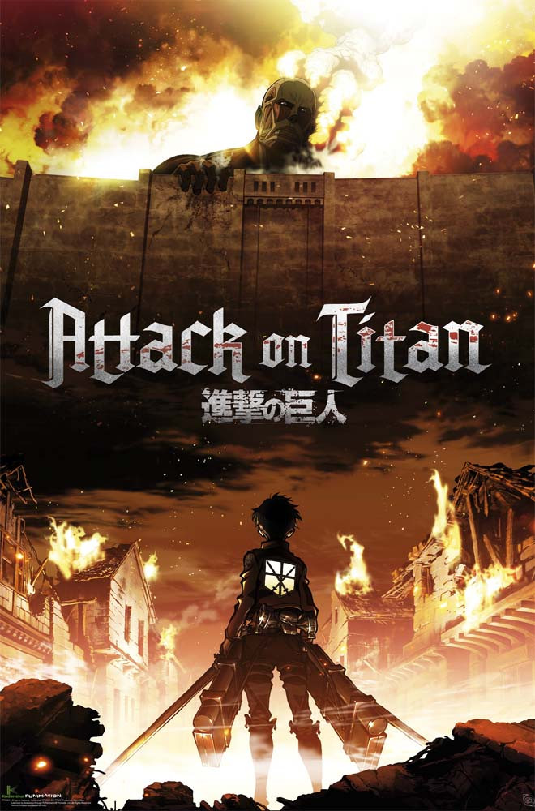
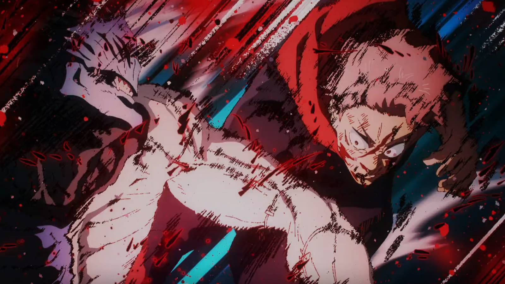
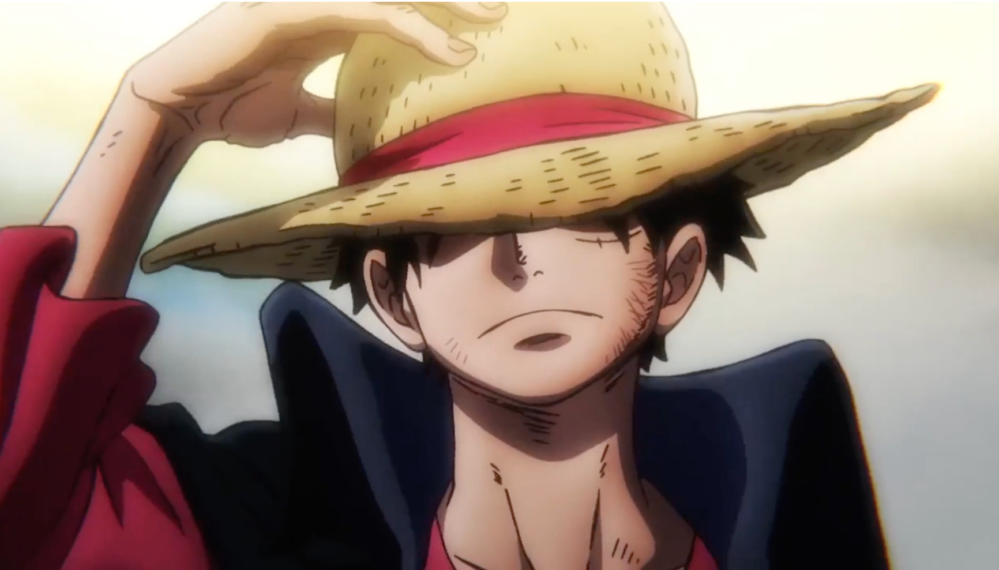
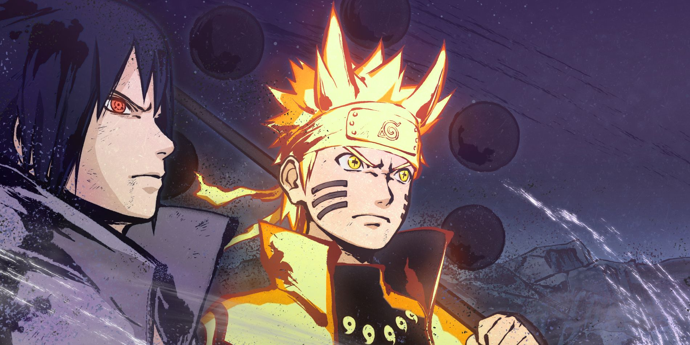

Attack on Titan es una obra maestra que revolucionó la industria del anime.
La historia sigue a Eren Yeager, quien tras presenciar la destrucción de su ciudad
por los temibles Titanes, jura exterminarlos a todos. Con una narrativa compleja,
giros inesperados y una animación de primer nivel, este anime se ha convertido en
uno de los más influyentes de la última década.
"Si no luchas, no puedes ganar." — Eren Yeager
Estudio: Wit Studio / MAPPA
Género: Acción, Drama, Fantasía oscura
Temporadas: 4 temporadas + final
🔥 Demon Slayer (Kimetsu no Yaiba)
Demon Slayer narra la historia de Tanjiro Kamado, un joven
cuya familia es masacrada por demonios y su hermana Nezuko es convertida en uno de ellos.
Con un corazón puro y una determinación inquebrantable, Tanjiro se une a los
Cazadores de Demonios para vengar a su familia y encontrar una cura
para su hermana. Reconocido por su animación espectacular de ufotable.
Estudio: ufotable
Género: Acción, Fantasía, Artes marciales
Película: Mugen Train (récord de taquilla)
👁️ Jujutsu Kaisen
Jujutsu Kaisen presenta a Yuji Itadori, un estudiante de
secundaria con habilidades físicas extraordinarias que se ve envuelto en el mundo
de las maldiciones tras ingerir uno de los dedos del poderoso
espíritu Ryomen Sukuna. Con un sistema de poder único y personajes carismáticos
como Satoru Gojo, este anime ha conquistado a millones de fanáticos.
Estudio: MAPPA
Género: Acción, Sobrenatural, Terror
Manga: Escrito por Gege Akutami
🏴☠️ One Piece
One Piece es el manga/anime más largo y exitoso de la historia.
Sigue las aventuras de Monkey D. Luffy y su tripulación de piratas en busca
del legendario tesoro One Piece. Con más de 1000 episodios, este anime
ha construido un universo inmenso lleno de islas, frutas del diablo y batallas épicas
que definen el género shōnen.
Autor: Eiichiro Oda
Género: Aventura, Acción, Comedia
Capítulos: Más de 1100 episodios
🍥 Naruto / Naruto Shippuden
Naruto cuenta la historia de Naruto Uzumaki, un ninja
marginado que sueña con convertirse en el Hokage, el líder de su aldea.
A lo largo de su viaje, forja amistades inquebrantables con Sasuke y Sakura,
enfrenta enemigos poderosos y demuestra que con esfuerzo y perseverancia, cualquier sueño
es posible. Una obra que definió una generación entera.
Autor: Masashi Kishimoto
Género: Acción, Aventura, Artes marciales
Secuela: Boruto: Naruto Next Generations
📊 Tabla Comparativa de Animes
Ranking de Animes Épicos
Anime
Año
Estudio
Rating
Attack on Titan
2013
Wit Studio / MAPPA
⭐ 9.1/10
Demon Slayer
2019
ufotable
⭐ 8.7/10
Jujutsu Kaisen
2020
MAPPA
⭐ 8.6/10
One Piece
1999
Toei Animation
⭐ 9.0/10
Naruto
2002
Pierrot
⭐ 8.3/10
🖼️ Galería de Imágenes Épicas

Demon Slayer

Attack on Titan

Jujutsu Kaisen

One Piece

Naruto Shippuden
🎬 Openings Épicos en Video
Disfruta de los openings más icónicos de estos animes legendarios: